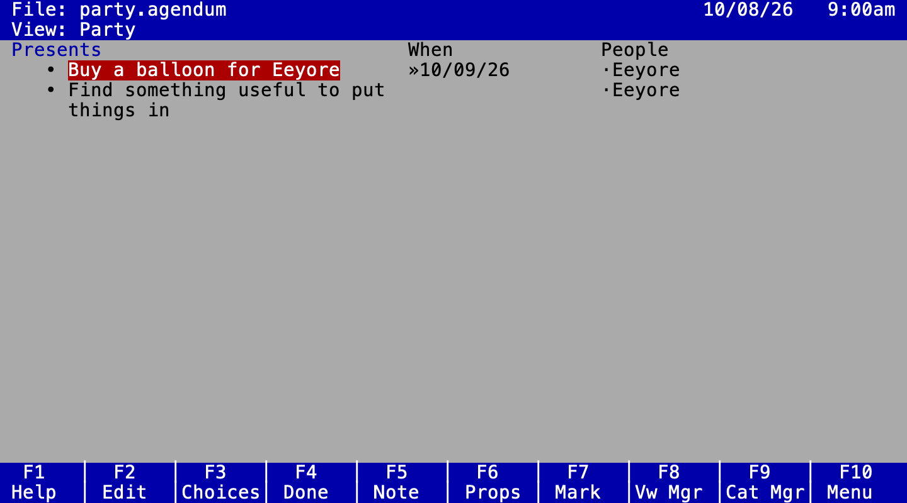
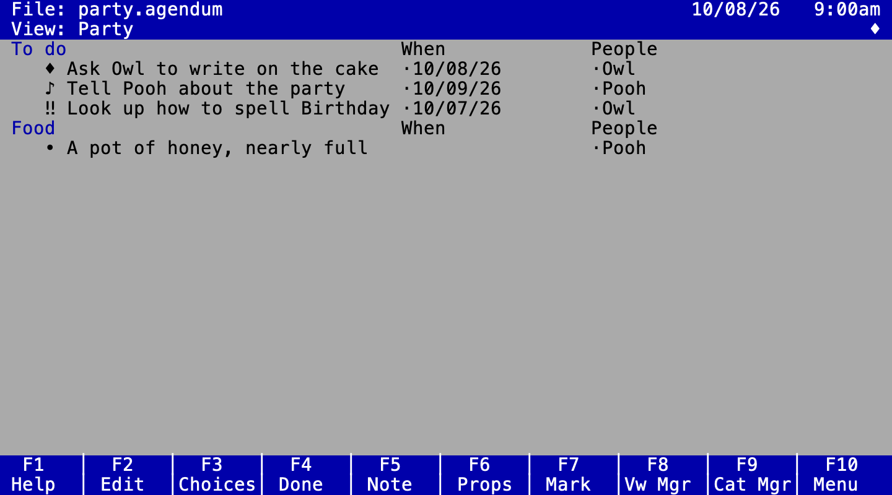
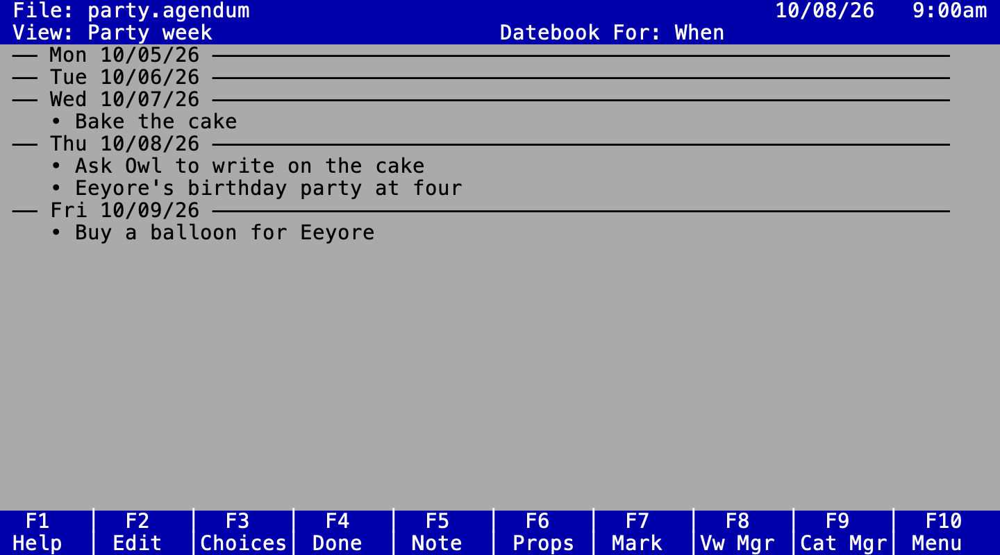
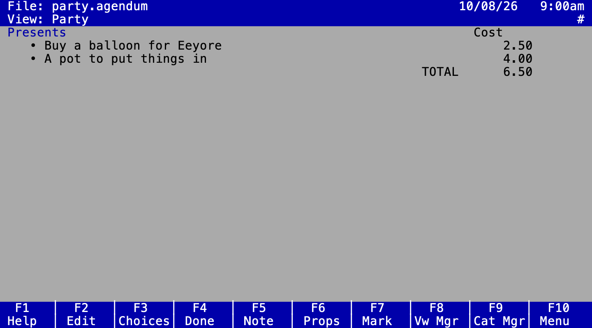

Wol's Agendum
The user guide. Wol's Agendum (Agendum for short) is a personal information manager in the spirit of Lotus Agenda (1988), for people with a great many small things to remember. Follow a Very Small Animal as he plans a birthday party.
Written for Agendum 0.77
1. Welcome
In Which Piglet Remembers It Is Eeyore's Birthday, and Nobody Seems to Have Noticed
Most organisers want you to decide where something belongs before you write it down. Agendum works the other way round: you type things as they come to you, in your own words, and Agendum files them. Later you look at the same information in different views: everything for Thursday, everything about one person, everything that still costs money.
Three ideas are enough to begin with:
- Items are the things you write down: a task, a phone call, an idea.
- Categories are the labels items belong to: people, projects, priorities, dates. An item can belong to many categories at once.
- Views arrange items by category, in sections (one per category) with columns showing more about each item.
2. Getting started
In Which Piglet Opens Wol's Agendum and Finds the Screen Has Three Parts
On a Mac or on Linux, Homebrew installs it, and Erlang, which it runs on, with it:
brew install jamting/agendum/agendum
agendum party.agendum # open (or start) a file agendum # ask which file, offering the last one used agendum --rabbit # try it with Rabbit's file from the manual agendum --demo # or with the sample from Agenda's patent agendum OLD.AG # bring in a file from Lotus Agenda itself agendum --help # every option agendum --version # which version you have, for a question or a bug report
Agendum greets you with a title screen for a moment (any key skips it). Started without a file, it then asks File to open or create, offering the file you used last: ENTER opens it, or type another name. A name that doesn't exist yet starts a new file, saved there the first time you save; F3 picks a file from a list instead.
The screen has three parts, coloured as Agenda 2.0 was on a colour screen:

- The control panel, the two lines at the top, shows the file and
the date and time, and below that the view you are in. A word at the top right
says when Agendum is doing something other than waiting for you
(
EDIT,AUTOC,BROWSE,LEARN), and small signs at the right of the View line tell you more: ♪, ☼ or#when the highlighted thing has a note, a date or a number, ♦ while items are marked,@after an alarm has rung. The menu, boxes, questions, prompts and messages take these two lines over while they last, and so does a name or date you type in a column. - The view is the rest of the screen. Items are indented, with a
bullet before each: • as a rule, ♪ when it has a note, ♦ when it is marked,
‼ when it is done. The highlight is white on red, and
»points at it when it is in a column; the line it is on is drawn a shade lighter right across. A small·stands before each column entry. - The key bar, the two lines at the bottom, reminds you what the function keys do right now, each key in a slot of its own above its label, as in Agenda, in a box or a move too. ALT-K shows in turn what they do with ALT, with CTRL and with SHIFT, then hides the bar, then brings back the plain keys.
Settings and choices open in cyan boxes. When a box opens another, the new one sits a little lower and to the right, and the title of the one beneath dims, so you can see where you are; ESC closes them one at a time.
In a box, the arrow keys (or TAB) move between its settings, and the control panel says what the highlighted one does. SPACE changes a setting or opens it (a setting ending in “…” opens a box of its own), a letter picks the next choice starting with it, F3 lists the choices, and numbers are simply typed. F8 puts the highlighted setting back to its default, and ALT-F8 every setting in the box. Changes show in the box; the screen behind it stays as it was until ENTER keeps them. ESC cancels the box and puts everything back as it was, as the bottom edge of the box reminds you. A box chosen from the menu goes back to the menu on ESC, one level at a time.
Some settings open a list of categories, such as a view's filter or an item's assignment profile: SPACE switches the highlighted category, typing the start of a name finds it, and ENTER accepts the list (“Press ENTER to accept”).
Questions such as “Discard this item?” come in a small box too: Y or N answers at once, or SPACE switches the answer shown and ENTER accepts it.
Press F10 (or /) for the menu, Agenda's own: File, Item, Category, View, Print, Utilities, Quit. Choose a command by its first letter; ESC goes back. Commands Agenda kept on keys, such as Note (F5) or Done (F4), are on their keys only. CTRL-Z undoes almost anything, and CTRL-Y redoes it.
F1 is Agenda's help: the topic for where you are (the view, a note, a manager, the menu or the box on top), with links in bold to other topics. The arrow keys move between the links and ENTER reads one. In the help, F3 is the index, by keyword; F5 finds every topic with a word in it; F8 (or BACKSPACE) goes back a topic, and F9 or ESC leaves. F6 lists every key here, and starts with two more things: the commands you can use right here (type a few letters to narrow the list, ENTER runs one; those that can't do anything just now are greyed, with the reason), and what a key does, without doing it. If you know roughly what a command is called, CTRL-X finds it by part of its name or its initials, and ENTER runs it.
3. Items
In Which Piglet Writes Down a Balloon, a Cake and Pooh
To add an item, just start typing under a section and press ENTER. INS (or CTRL-N) starts a new item below the highlighted one. A long item wraps onto more lines as you type; ↑ ↓ move between them, and only ENTER (or TAB) takes the text.
| To | Press |
|---|---|
| Change an item's text | F2 (or CTRL-E) |
| Write a longer note behind an item (♪ in the bullet's place) | F5; F5 again to return |
| Mark it done (‼) | F4 (or CTRL-K) |
| See and change all about it | F6 Item Properties |
| Mark several items to act on together (♦ in the bullet's place) | F7; ALT-F7 unmarks all |
| Move it to another section (it goes last there) | ALT-F10, then pick the section |
| Move it up or down its own section | Item ▸ Reposition: ↑ ↓, then ENTER |
| Put it in another section as well (the same item, not a copy) | ALT-F9 |
| Take it out of this section only | DEL (Item ▸ BrkAssign), after “Remove this item from the section?” |
| Bring back the item DEL last took out, into this section | ALT-Y |
| Hop to the same item further on, in this view or the next that shows it | ALT-H; ALT-F8 comes back |
| Throw it away altogether, into the trash | ALT-F4 (or CTRL-D), after “Discard this item?” |
| Take it back out of the trash | Item ▸ Undisc |
A discarded item waits in the trash. Item ▸ Undisc brings it back below the highlighted item, in that section only: as in Agenda, it comes back without its other categories, dates and alarm (CTRL-Z straight after the discard brings back everything). The trash is emptied at the end of the day, unless File ▸ Properties ▸ Empty trash says otherwise (when the file is closed, at once, or only when you ask); Utilities ▸ Trash empties it now.
With items marked, F4, DEL, ALT-F4 and friends first ask whether you mean the marked items or just the current one. Marked items moved with ALT-F10 arrive in the order you marked them.
In a note, the top line says whose note it is (“Note for: Plan the party”), and on
the right which line the cursor is on and whether you are inserting (INS) or
typing over (OVR; INS or CTRL-N switches).
F5 saves the note and goes back to the view. ESC goes back too, but
if you changed the note it first asks “Discard changes?”: No keeps them,
Yes puts the note back as it was. F10 opens the note's own menu:
Import a text file at the cursor, Export the note to one,
or Clear it.
A long line in a note wraps onto as many rows as it needs, so you always see all of it (only on the screen: no line break goes into the text). ↑ ↓ move by the rows you see; HOME and END (CTRL-A, CTRL-E) go to the start and end of the row, and pressed again, of the whole line. CTRL-← CTRL-→ move a word, PGUP PGDN a screenful, CTRL-K deletes to the end of the line, and TAB types spaces to the next tab stop (File ▸ Properties ▸ Tab size).
In a note, ALT-D and ALT-T type today's date and the time, ALT-C one picked from the calendar, ALT-F6 searches (and replaces: a Yes/No box asks about each occurrence, which stays highlighted, and each replacement can be undone on its own), and ALT-N / ALT-P move on to the next or previous item's note. ALT-F9 moves text from the note onto the end of the item's own text, and ALT-F8 types the marked items into the note, each with its note, after asking “Discard items after copy?”: Yes discards them, since they now live in the note, No keeps them.
Text in a note can be cut and pasted as in Agenda. F7 starts marking at the cursor (move it to stretch the marked text; F7 again stops). F3 copies it, F4 cuts it, ALT-F4 deletes it, and F2 pastes it, as often as you like, in this note or another. With nothing marked, Agendum asks whether you mean the word, the line or all the text. The same keys work while you type an item, a name or any other line, as the key bar shows.
A note can grow into new items and categories, too: ALT-F7 makes the marked text (or the word, line or all the text) a new item of its own, taking it out of the note, and ALT-F2 makes it a new category, under a parent you pick.
4. Categories
In Which Pooh, Owl, Rabbit, Kanga, Roo and Eeyore Are Put Under People
Categories live in a tree, which you see in the category manager
(F9). Every category sits under MAIN; a category can have
children (People → Pooh, Owl, Rabbit).
An item in a child category belongs to its parents too.
Adding and arranging
| In the category manager | Press |
|---|---|
| Add a category below the highlighted one | just type, or INS / ALT-D |
| … above it | ALT-U |
| … as its child / as a new family after its parent | ALT-R / ALT-L |
| Promote / demote one level | F7 / F8 |
| Move up or down among its siblings; move anywhere | ALT-↑ ALT-↓; ALT-F10 |
| Rename; discard | F2; ALT-F4 or DEL |
| Fold a family away | ALT-− / ALT-= |
| Properties (see below) | F6 |
| Copy its conditions or actions to another category; clear them | ALT-F9, then move to the other and ENTER; ALT-F8 |
| The category manager's own menu (Category, Return, Quit) | F10 |
The category manager looks as Agenda's did: just the names, indented by level, with
♪ before a category with a note, ☼ before a date category and # before a
numeric one, and ┌ ├ └ joining the children of an exclusive family. A new
name is typed on the control panel's second line.
When every other child of a family is a section of a view, a new child added in the category manager (or typed as a new name in a column) becomes a section of that view too, next to its brothers and sisters, as in Agenda. Category ▸ Add and moving a category into the family leave the views alone.
From a view, Category ▸ Properties and Category ▸ Discard act on the category of the section head the highlight is on.
Agendum files things for you
When an item's text mentions a category by name, Agendum assigns it there. “Ask
Owl to write on the cake” lands in Owl (and so in People)
without Piglet doing anything. Item Properties marks such assignments with
(c): they follow the text, so if Piglet later changes it to “Ask Rabbit…”,
the item leaves Owl again. Assignments you make yourself always stay.
To assign by hand, press F3 on an item for its assignment profile (SPACE ticks a category), or ALT-M to pick one category for the item or all marked items. In the profile, the control panel says why the item is in the highlighted category: typed there by hand, its name in the text, a condition, an action, or through a subcategory (“In Urgent: its condition holds”).
Category properties
F6 on a category opens its properties, a box in two columns as Agenda's was. Note, Statistics (how many items are in it, where it is used) and Advanced settings end in “…”: SPACE opens each. The settings are:
- Short name: a nickname that also counts when matching text and shows in narrow columns (Christopher Robin → CR).
- Exclusive children: an item may only be in one child at a time, as with High, Medium and Low priority.
- Match category name: whether its name files items automatically.
- Type: make it a numeric or a date category, or an unindexed one, which holds a line of text for each item, such as a phone number.
- Also match, Assignment conditions, Assignment actions, Special actions and Advanced settings: see letting Agendum do the filing.
5. Views, sections and columns
In Which Piglet Can See at a Glance What to Tell Whom
A view is a saved way of looking at your items. Each section shows the items of one category; each column shows something about every item, such as its date or who it involves.

| To | Press |
|---|---|
| Add a section below / above | ALT-D / ALT-U; or View ▸ Section ▸ Add, which asks for its head, where it goes and its settings in one box |
| Add a column right / left | ALT-R / ALT-L |
| Move between the item and its columns | ← → or TAB |
| Jump to another section (GO TO) | ALT-F5 |
| Fold a section away / open it again | ALT-− / ALT-= (twice: all) |
| Next / previous view; back to the last one | ALT-N / ALT-P; ALT-F8 |
| Switch, add, rename or discard views | F8 view manager; type the start of a view's name to jump to it |
| All of a view's settings: its name, sorting, what it hides, its sections and filter | View ▸ Properties (F6 on a view in the view manager) |
| Change a column's width | View ▸ Column ▸ Width: ← → or type a number, ? fits it to what it shows, ENTER keeps it |
| Move a column (or the item text) left or right | ALT-F10 on its head, or View ▸ Column ▸ Move: ← →, then ENTER |
| Add a column, choosing where and how | View ▸ Column ▸ Add |
| Hide empty sections (or show them again) | ALT-V |
| A section's settings: its head, sorting, filter and columns | F6 on its head, or View ▸ Section ▸ Properties |
| Move a section up or down in the view | ALT-F10 on its head, or View ▸ Section ▸ Move: ↑ ↓, then ENTER |
| A line across for each section head | View ▸ Properties ▸ Section separators |
| Column heads on the first section only | View ▸ Properties ▸ Hide column heads |
| Number the items 1, 2, 3 … in each section | View ▸ Properties ▸ Number items |
Section Properties lists the section's columns, with the item text
as <Items>: DEL takes a column out of this section,
ALT-↑ ALT-↓ move one, INS adds one. F6 on
its Section head opens the head category's own properties. While a section
moves, every section is folded up so you can see where it goes; ESC puts it
back.
View Properties holds everything about a view in one box, laid out as
Agenda's: its name, how items and sections are sorted, which items it hides, section
separators, numbered items and its statistics on the left; on the right its sections,
which you can add (type a name), remove (DEL) or move (ALT-F10), and
its filter beneath them. F3 on the sections opens Agenda's Section
Select: the whole tree of categories, with * on the view's sections;
SPACE makes a category a section or takes it away.
The view manager (F8) is a box listing your views, with *
before a datebook: ENTER shows one, INS adds one, F2
renames it, F6 opens its properties and F4 (or DEL)
discards it.
Typing in a column assigns the item: in the People column, Piglet types R and Agendum offers Rabbit (ENTER takes it, F8/F7 show the other matches, INS makes a new category). Typing a name that doesn't exist yet simply creates it.
Columns in one section or in all
Each section has its own columns. A column added to all sections (the usual way) is linked: widen it in one section and it widens in all of them. A column added to just the current section changes on its own. View ▸ Column ▸ Add lets you choose the column's head, its type, width, which side it goes on, and whether it goes in this section or all of them. File ▸ Properties sets which of those is the default for ALT-R and ALT-L. When you remove a linked column, Agendum asks whether to take it out of every section or only this one. To reach the columns of an empty section, press → on its head.
View ▸ Column ▸ Properties (or F6 on a column head) is one box for every column: its head, width, whether it is linked, and how it shows things. On the item text, the same command sets the width of the item text itself.
What a column shows
A column headed by an ordinary category shows, by default, the names of the
categories under that head that the item is filed in. Its Format can
show them as Parent:Category, or just the Ancestor they come under.
It can also show a Star (*), or Yes/No, when the item is
in the head at all. In a Star column SPACE stars or unstars an item; in a
Yes/No column, Y and N do the same. A Category note
column shows one line of the category's note, so a phone number written in Owl's note
can sit beside every item about Owl, and typing there changes that line of the
note.
Categories have notes as items do. ♪ at the right of the control panel says the highlighted thing has one, whether an item, a section head, a column head or the category a column entry shows; F5 opens it.
The Hide settings in View Properties hide done items, empty sections, items that are only in a subcategory, or items still waiting for others.
6. Dates, times and alarms
In Which a Cake Is Baked on Wednesday and Iced on Thursday, and the Haycorns Are Watered Every Day
Write dates as you would say them, and Agendum fills in the When column: “tomorrow”, “Thursday”, “next week”, “the 5th of November”, “in 3 days”, “friday at 3pm”, “tonight”, “in five working days”, “the first Wednesday in November”, “the last Friday of the month”, “end of the quarter”, “next April”. Dates without a year are always in the future.
| To | Do |
|---|---|
| Set or change the When date yourself | ALT-F2, or type in the When column |
| Pick a date from a calendar | F3 in a date column; ENTER sets it, F6 adds a time |
| Just look something up in a calendar | ALT-C |
| Be reminded before the time | ALT-A: the Set Alarm box asks which date it rings before (When, or another) and how many minutes before (5) |
| See the alarms still to ring, and those that have rung | Utilities ▸ Show ▸ Alarm: !Current Alarms! and !Past Alarms!; DEL cancels one or takes it off the list |
| Change how dates look | File ▸ Properties ▸ Global date settings ▸ Display format |
| Give one date column a look of its own | View ▸ Column ▸ Properties on the column |
| Stop reading dates from item text | F6 on When in the category manager ▸ Date settings |
When an alarm rings, @ stands at the right of the View line until you take
it off the list of past alarms. An item without a date can have an alarm too; it waits
until the item gets one. Alarms that came due while the file was closed are not lost.
When you open it, they ring, as in Agenda, and they wait in Utilities ▸
Show ▸ Alarm with the other past alarms. (With the extras
on, a While you were away box lists them as well.)
File ▸ Properties opens boxes one inside another, as Agenda did: SPACE on
Global date settings … and then on Display format … sets how the whole
file shows dates and times. A new file shows them as Agenda did, 10/08/26
9:00am; to see 2026-10-08 09:00 instead, choose Date format YYYYMMDD,
the separator “-” and a 24-hour clock (F8 on a setting gives Agenda's back).
You can choose the date
and time or just one of them, the weekday, the order (10/08/26, 2026-10-08, 8 Oct 26 …),
the separator, a 12- or 24-hour clock with or without am/pm, and “3h30m” instead of
“3:30”. It also offers Agenda's counting formats: the day or week of the year (“Day 281”,
“Week 41”) and Relative, which says Today, Tomorrow, Yesterday or “nxt Sun”
for the days around today. A date column can have its own format: say Relative in a
Deadline column while the rest of the file shows full dates.
Dates of your own
When, Entry (when you typed the item) and Done (when you finished it) come with every file. You can make more: a category such as Due or Bake by, turned into a date category with F6 ▸ Type ▸ Date. Each item can have one date in it, typed in its column (“friday 3pm”) or set in Item Properties, and it sorts, filters and conditions like When. Its Date settings say where the date comes from: the clock when the item is typed or changed, or the item's text (“the second date in it”), and whether F4 or ALT-F2 sets it too.
Things that happen again and again
Say every: “every Monday”, “every other week”, “the 1st of every month”, “every quarter”. Such an item shows on every date it comes round on: in each day of a datebook, and in a view filtered on dates. It is still one item, and when you mark it done with F4, Agendum puts the next one right after it with the next date. Changing its date (ALT-F2) shows the rule, “every Monday (starting 2026-10-19) at 9:00am”, so ENTER keeps it.
In another language, or your own way
Dates can be typed in Swedish too, with English as a fallback. Choose the languages in Utilities ▸ Customize, or for one session:
agendum --lang=swedish --fallback=english party.agendum
Then “på fredag kl 15”, “i morgon”, “varje måndag” and “den 5 november” work as well. Only the reading of dates changes; menus and messages stay in English.
How you type numeric dates is yours too: Utilities ▸ Customize ▸ Input format
sets the order of day, month and year (so “12/11” is the 12th of November or December
the 11th, as you are used to), the separator you type (12.11), and whether
“3:00” means three in the afternoon. These settings, the theme and the languages are
kept in your own preferences, not in the file, so they follow you from file to file.
7. A datebook
In Which Piglet Flips Forward to Make Sure Nothing Clashes with Christmas
A datebook view is a page of an appointment book: instead of a section for each category it has a section for each hour of a day, each day of a week, or each day, week or month of a month or a quarter, and every dated item sits in its place. Make one with View ▸ Add: give it a name, then choose Datebook rather than Standard.

View ▸ Properties sets what it shows: the period (a day, a week, a month or a quarter), what each section covers (15 or 30 minutes or an hour of a day; a day or a week of a month), the hours of a day or the days of a week, and the base date, such as “today” or “next week”, which is read again every day. Type an item under a day or an hour and it gets that date and time. The same box can hide the column heads after the first day and draw a line for each day. A Section category shows only its own items (say, only Visits), and an End category shows an item in every hour it lasts.
| To | Do |
|---|---|
| Turn the pages: the previous / next day, week or month | ALT-B (View ▸ Browse), then ← →; ENTER stays there, ESC goes back, F8 returns to where you started and F10 opens the menu |
| Jump to a date while turning pages | ALT-F5, then type it |
| Move an ordinary view's date filter the same way | ALT-B: ← → a day, ↑ ↓ a week, PGUP PGDN a month, CTRL-PGUP CTRL-PGDN a year; the control panel shows the dates as they move |
| See everything on one day, without making a view | Utilities ▸ Show ▸ Sched |
8. Numbers and totals
In Which a Balloon and a Pot Come to 6.50 Altogether
A numeric category holds a number for each item, shown in a
column with a total at the bottom of every section. Make one with F6 ▸
Type ▸ Numeric in the category's properties, add it as a column
(ALT-R), and type the numbers in. The control panel shows #
at the right of the View line in a numeric column.

View ▸ Column ▸ Properties chooses the currency or label, decimals, thousands separator, how negatives look, and which results to show: count, total, average, minimum, maximum. Section Properties ▸ Select numeric functions sets these for every numeric column of a section at once. Display % of total adds a narrow % tot column beside the numbers, with each item's share of its section's total.
Whether numbers are written 1,234.50 or 1 234,50 is your own
choice, in Utilities ▸ Customize (Decimal separator and
Thousands separator); it holds for numbers you see and numbers you type, in
every file.
9. Finding, filtering and sorting
In Which bal* Finds the Balloon and a Pot of Honey Is Found Whole
Searching
ALT-F6 searches the view, as Agenda's Search did: a box asks for the text
(ENTER takes it), whether to look in items, notes or both, and which way, and
a second ENTER searches, from the item after the highlighted one. If nothing
matches, a box says so. ALT-N and ALT-P then go to the next and
previous match, and F7 marks it. Utilities ▸ Show ▸ Match
gathers every match in the whole file into a Show View; ALT-F8 goes
back. Show ▸ ItemsDone gathers the done items the same way, and
Show ▸ Every every item in the file. Words match whole;
bal* matches any ending; (a pot of honey) matches the phrase.
Filtering
View Properties ▸ Filter (or Section Properties ▸ Filter
for one section) shows only items in, or not in, chosen categories: SPACE
cycles + / − / none, and ENTER accepts. Choose a date or numeric category and you can give
a range instead: “today” to “friday”, or a cost from 5 upwards. Relative dates are
read again each day, so a view of “this week” stays this week.
Sorting
View Properties ▸ Item sorting sorts every section by item text, by a category (its children in order, its date, or its number) or by a line of a category's note; a second key breaks ties. Section sorting, beside it, sorts the section heads themselves. Section Properties ▸ Item sorting does the same for one section.
10. Things that wait for other things
In Which the Cake Waits for Owl to Look Up How to Spell Birthday
Some tasks can't start before others are done. Mark the earlier ones with
F7, highlight the later one and press ALT-O: it now
depends on them and shows & until they are all done.
- View Properties ▸ Hide dependent items hides waiting items until they're ready.
- Utilities ▸ Show ▸ Prereqs lists what an item waits for; Utilities ▸ Show ▸ Depends what waits for it (one level, all levels, or every such item).
- F6 Item Properties lists, by name, what the item waits for and what waits for it; DEL there undoes one dependency.
- ALT-O with nothing marked clears an item's dependencies.
11. Letting Agendum do the filing
In Which Rabbit Offers to Help, Because He Likes Things Organised
Agendum can do more than spot names. All of this is set in a category's properties (F6).
How names are matched
Agendum reads words as Agenda did, and as people do. Endings are ignored, so Party also catches “parties”; short words of three letters or fewer must match exactly. Text in quotes is left out. A name of two capitalised words is a person's name: the category Edward Bear catches “ask Mr. Bear about the honey”, but not “Teddy Bear”, who is somebody else. File ▸ Properties ▸ Auto-assign settings changes the rules for the file: match the item, its note or both; require every word of a name, half of them, or one; ignore endings or accents or not; and which brackets enclose text to leave out. A category's Advanced settings can change these for that category alone, say to match its name in notes only.
Also match
More words that count as the category: for Food,
honey;hunny;haycorn*;(birthday cake). A ; means or,
, means and, ! means not, * and
? are wildcards.
Conditions: pulling items in
Assignment conditions put an item in a category because of where else it is: Urgent if it's in To do and in Eeyore; Nobody yet if it is not in People. A condition on a date or numeric category takes a range: This week if When is between “beginning of this week” and “end of this week”. Items leave again when the condition stops holding.
Actions: pushing items on
Assignment actions run once, when an item joins the category: also put it in another category, take it out of one, give it a date (“tomorrow”) or a number. A Special actions marks items done, or throws them away, as they arrive.
Applying new rules to old items
Conditions can chase each other: one puts an item in, another takes it out again. An
item caught like that shows o at the right of the View line, and
Utilities ▸ Show ▸ Circular lists every such item.
New conditions and actions only affect items as they change. Utilities ▸ Execute applies them to items you already have (all of them, the current one, the marked ones, a section or the view); ALT-X does everything at once and ALT-E just the highlighted category.
Asking first
If you'd rather approve each automatic filing, set File ▸ Properties ▸ Auto-assign
settings ▸ Confirm assignments to Always. A ? then appears
at the top right, and Utilities ▸ Questions goes through the suggestions one item at a time
(SPACE picks, TAB picks all, ENTER confirms).
12. Files, printing and looks
In Which the Party Is Kept Clear of Roo's Swimming Lesson
| To | Press or choose |
|---|---|
| Save | CTRL-S (or ALT-W) |
| Save a copy under another name (you stay in this file) | File ▸ Maintenance ▸ MakeCopy |
| Go back to the file as you last saved it | File ▸ Abandon (CTRL-Z brings your changes back) |
| Open another file (a damaged one is refused, saying what is wrong) | CTRL-O (or ALT-G); F3 picks it from a list |
| Start a new file | File ▸ Retrieve with a name that isn't a file yet: the New File box asks for a description and a password, both optional |
| Throw a file away (into your computer's Trash) | File ▸ Maintenance ▸ Erase |
| Start a file like this one, without its items | File ▸ Transfer ▸ Template |
| Print the view to a text file | CTRL-P (Print in the menu) |
| Undo / redo | CTRL-Z / CTRL-Y |
| Quit | CTRL-Q (or ALT-Q) |
| Your theme, date languages, input format and the preferences below | Utilities ▸ Customize |
Utilities ▸ Customize also holds a few preferences that follow you to every file. Auto-save interval saves a named file by itself after that many minutes without a key press. Confirm mode set to No stops the “are you sure?” questions (undo still works). Display key map decides whether the key bar is shown; ALT-K hides it on its fourth press, and Agendum remembers whether it was shown. Sound turns Agenda's beeps on or off: a high beep when what you type matches exactly one category, a low one when it matches none, a beep on an error, a click for each key a macro learns, and a little tune for an alarm. Beep on auto-completion silences just the first two. Extras is described below.
File ▸ Properties holds the file's own settings, as Agenda's did. A
File description of up to 40 characters shows beside the file's name when you
pick a file (F8 in the list). Make backup on open copies the file to
party.agendum.bak each time it is opened. Set file password locks
the file: it is saved encrypted, and opening it asks for the password. Keep it safe,
for a forgotten password cannot be recovered. Empty trash says when discarded
items go for good, and File statistics counts the file: the items, how many
have notes, how many are in the trash, the categories, and on average how many items
each category has and how many categories each item is in. Its last row, Update
defaults, keeps this file's settings (backups, trash, the date format and the
other date settings, automatic assignment) as your own for every new file you start
from then on; files you already have keep theirs.
Wherever Agendum asks for a file name, F3 lists the folder's files and
folders: ↑ ↓ move, typing narrows the list, ENTER opens a
folder or takes the file, ../ goes up, and F7 shows when each was
last changed.
A file opens where you left it: in the same view, on the same item. Agendum keeps your place in your own preferences, not in the file, so moving about never counts as a change to save.
Before quitting, opening another file, starting a new one or importing, Agendum asks “Save changes first?” if there are any: Y saves, N doesn't, ESC stays where you are.
Should Agendum ever crash with changes not yet saved, it keeps them beside the file,
in party@.agendum, and the next time you open the file it asks whether to
open them. Yes brings them back, to save as usual; No moves them to the
Trash.
If something else changed the file since Agendum read it (another Agendum, or a program that syncs your files), Agendum asks before saving over it; No leaves it alone, and File ▸ Maintenance ▸ MakeCopy saves yours under another name.
Sharing with other programs
File ▸ Transfer ▸ Export writes the whole file as JSON, a plain text format other programs (and people) can read; File ▸ Transfer ▸ Import opens such a file again, as a new file to save under a name. Nothing is lost on the way: categories, items, notes, dates, views and settings all come back.
Import also opens a file from Lotus Agenda itself (.AG), or start Agendum
with one: agendum OLD.AG. It becomes an Agendum file beside it, with its
categories, items, notes, dates, views and rules (asking for its password, if it has
one). A box then reports what came over, what was left out (macros and separate note
files, so far), and any item Agendum files differently from Agenda.
Extras
Agendum has a few things Agenda never had. They are hidden until you set Utilities ▸ Customize ▸ Extras to Yes, so that someone who knew Agenda finds it as it was. With the extras on, you get calendars from the web (below), the While you were away box for alarms, ► before the view you are in and F5 for recently used views in the view manager, longer key bar labels on a wide screen, and three that are still young: Zettel ids and links between items, a small blog published from the file, and a news reader for RSS feeds. Their commands are together in a menu of their own, Extras (F10 E), between Utilities and Quit: Calendars, Feeds, Publish, Open link and Zettel. Turning the extras off again hides them, and that menu, but nothing in the file is lost.
Calendars from the web
If a calendar you use is published on the web (an address ending in
.ics, or starting with webcal://), Agendum can bring its events
in as items, once the extras are on.
Extras ▸ Calendars lists your subscriptions. INS (or
CTRL-N) asks for the address and reads the calendar at once, then offers the
calendar's own name for its category, which you may change; one that cannot be read is
not subscribed, and you are told why. The calendars' categories sit together in a
family called Calendars, folded away in the category manager
(ALT-= opens it). They are the calendar's to fill: to rename one, use
F2 here.
| In the Calendars box | Press |
|---|---|
| Read the highlighted calendar now; read them all | ENTER; ALT-ENTER |
| Subscribe to another | INS or CTRL-N |
| Rename it, and its category | F2 |
| How often it is read (every hour at first), how far ahead (90 days) | F6 |
| Unsubscribe (asks whether to throw its items away too) | DEL or F4 |
Each event becomes an item with its date and time; a repeating one becomes a repeating item. When an event ends is kept too, in a date category called Ends, which a datebook can use to show the event in every hour it lasts. An event set in another time zone is moved to your own time. When the calendar changes, so do the items, but your own notes, categories and done marks stay.
News from the web
Extras ▸ Feeds is a quiet news reader for RSS and Atom feeds. It works as the Calendars box does (INS, ENTER, ALT-ENTER, F2, F6, DEL), and F7 / F8 bring in or write out a list of feeds as OPML, the file other news readers use. Each entry becomes an item under Feeds and the feed's name, and the first feed makes a News view, newest first.
Nothing asks to be read: there are no unread counts. An entry fades away after 30 days (F6 changes how long), unless you kept it by giving it a note, a category of your own or a Zettel id. F4 dismisses one, and CTRL-V (Extras ▸ Open link) opens its page in your browser.
A small blog
Extras ▸ Publish makes a website from the items in a category (Posts at first): the item's text is the title, its note the post, written in Markdown. The box holds the blog's settings, which folder it goes to and how it is uploaded (rsync or SFTP, or not at all); F8 and ALT-F8 put a setting, or all of them, back as a new blog has them. ENTER first shows what would change, and ENTER again writes it. The pages are plain, quick and typeset in the same fonts as this guide, with RSS and JSON feeds for readers.
Looks
Agendum looks as Agenda 2.0 did on a colour screen: grey, with blue and cyan. Other themes are in Utilities ▸ Customize: Mono, for plain terminals, which uses only bold, dim, underline and reverse; Borland, yellow on blue as the old DOS programming tools were; and the colours of some well-liked terminal schemes, Modus Operandi (light), Modus Vivendi (dark), Alabaster, Zenburn and Ayu. For one session:
agendum --theme zenburn party.agendum agendum --mono party.agendum # the same as --theme mono NO_COLOR=1 agendum party.agendum # mono, unless you chose a theme
In a terminal that shows 24-bit colour, the colours are exact.
Ready-made files
Agenda came with ready-made files to start from, and Agendum comes with three, in
starters/ in Agendum's
source. Download one
and open the copy.
- The Activities Planner (
planner.agendum), Agenda's own: categories for people, projects, tasks, activities (calls, meetings, mail …), priorities and expenses, which file what you type, and views to go with them: Tasks, Calls, Overdue, expense reports, datebooks for today, tomorrow, this week and this month. Three macros come with it: change the date settings, hide or show done items, and print the view. It has no items yet. - Getting Things Done (
gtd.agendum): type everything into the Inbox, and words file some of it by themselves (“Call Anna” goes to @Calls, “Buy milk” to @Errands, “Waiting for Bob's reply” to Waiting For); the rest you file by typing a context in its column, and a filed item leaves the Inbox. Next Actions by context, Agendas (what to bring up with each person), Projects (one with nothing next shows as an empty section), Waiting For, Someday/Maybe and a Weekly Review. Its first item says how it works. - A Journal (
journal.agendum): dreams, mood, training, the gym and health in one file. Type a line in Today and its words file it (“Ran by the river” to Training, “Bench press” to Gym, “Headache after lunch” to Health); type its numbers in the collection's view, which shows this month week by week with the week's totals, averages or best under it. A week with nothing logged is not shown. The ♪ on the Journal head (F5) says how it works.
agendum ~/Downloads/planner.agendum
13. Macros: doing it again
In Which Six Friends Are Asked in Six Key Presses, and Not on F4
A macro remembers keystrokes and plays them back. ALT-F3 opens the
macro manager; INS (or CTRL-N) names a new macro and
F7 starts Learn mode: LEARN shows at the top right, and
everything you press is done as usual and recorded, until ALT-F3 stops it.
| To | Press |
|---|---|
| Run a macro | ENTER on it in the macro manager |
| Run the last macro again | ALT-Z |
| Read or change its keystrokes | F2 in the macro manager |
| Give it a key of its own, or say where it may run | F6 Macro Properties |
| Delete; sort by name; move in the list | DEL; ALT-F5; ALT-↑ ALT-↓ |
The keystrokes are written as Agenda wrote them, text as itself and keys in braces:
Bring a small present{ENTER}, {F10}vc. A macro attached to a
function key shows its name on the key bar: on SHIFT or CTRL with
one, press ALT-K until that bar shows. One run is one step for
CTRL-Z, however much it did.
14. Keyboard reference
In Which Every Key Is Listed, with Another for a Mac
The function keys are needed, as in Agenda: on a Mac, hold fn with them (ALT-F keys are ⌥ with the function key) or make them standard function keys in System Settings ▸ Keyboard. ALT letters are ⌥ letters, with Option set to work as the Meta key in your terminal. F1 then F6 lists every key, wherever you are.
| Key | In a view | Mac-friendly |
|---|---|---|
| F1 | Help about where you are; in the help F3 the index, F5 find, F6 every key, F8 back, F9 leave | |
| F2 | Edit item, section head or column entry | CTRL-E |
| F3 | Choices: assignment profile, the categories for a column, or the calendar in a date column | |
| F4 | Done / not done | CTRL-K |
| F5 | Note of the item, or of the category highlighted | |
| F6 | Properties of the item, section (on its head) or column (on its head) | |
| F7 | Mark (on a section head: all its items) | |
| F8 / F9 | View manager / category manager | |
| F10 | Menu | / |
| INS | New item (or column entry) | CTRL-N, ALT-I |
| DEL | Remove from section or column (asks first) | fn-⌫ |
| ALT-F2 | When date | |
| ALT-F3 | Macro manager; in Learn mode, stop recording | |
| ALT-F4 | Discard, into the trash | CTRL-D |
| ALT-F5 | Go to a section | |
| ALT-F6 | Search: ENTER twice (then ALT-N / ALT-P) | |
| ALT-F7 | Unmark all | |
| ALT-F8 | Last view | |
| ALT-F9 | Copy the item (or the marked ones) to another section as well | |
| ALT-F10 | Move item to another section (a box of the sections); on a section or column head, move the section or column | On a head: View ▸ Section ▸ Move, View ▸ Column ▸ Move |
| ALT-A | Set an alarm | |
| ALT-B | Browse a datebook or a date filter to other dates | ⌥b |
| ALT-C | Show the calendar | ⌥c |
| ALT-D / ALT-U | Add section below / above | |
| ALT-H | Hop to the item's next occurrence | ⌥h |
| ALT-R / ALT-L | Add column right / left | |
| ALT-J | Next marked item | |
| ALT-K | The key bar in turn: the ALT, CTRL and SHIFT keys, hidden, the plain keys | ⌥k |
| SPACE; Y / N | In a Star column: star or unstar; in a Yes/No column: yes or no | |
| ALT-M | Assign to a category | |
| ALT-N / ALT-P | Next / previous view | |
| ALT-O | Depend on the marked items | |
| ALT-V | Show / hide empty sections | |
| ALT-X / ALT-E | Execute everything / one category | |
| ALT-Y | Yank back the item DEL last removed | ⌥y |
| ALT-Z | Run the last macro again | ⌥z |
| ALT-− / ALT-= | Collapse / expand section | |
| ALT-1 ALT-0 … | A count: the next move runs that many times (ALT-1 ALT-0 ↓ goes ten rows down) | ⌥1 ⌥0 |
| CTRL-PGUP / CTRL-PGDN | Previous / next section | ⌥↑ / ⌥↓ |
| CTRL-Z / CTRL-Y | Undo / redo | |
| CTRL-X | Run a command by its name (part of it, or its initials) | |
| CTRL-V | Open the item's web link in the browser (with the extras on) | |
| CTRL-S / CTRL-O | Save / open | ALT-W / ALT-G |
| CTRL-P / CTRL-Q | Print to file / quit | ALT-Q |
While typing, CTRL-A / CTRL-E go to the start or end of the line, ⌥← / ⌥→ move by word, CTRL-K deletes to the end, CTRL-W deletes a word and CTRL-U clears the line.
| Key | In a note | Mac-friendly |
|---|---|---|
| F7 | Mark text (again: stop) | |
| F3 / F4 / ALT-F4 | Copy / cut / delete the marked text (or a word, line or all) | |
| F2 | Paste | |
| ALT-F7 / ALT-F2 | Make a new item / category from the text | |
| ↑ ↓; HOME / END | Up / down a row on the screen (long lines wrap); start / end of the row, again: of the line | CTRL-A / CTRL-E |
| CTRL-← / CTRL-→ | A word left / right | ⌥← / ⌥→ |
| PGUP / PGDN; CTRL-HOME / CTRL-END | A screenful up / down; the start / end of the note | ⌥< / ⌥> |
| CTRL-BACKSPACE / ALT-W; CTRL-K | Delete the word before / after the cursor; to the end of the line | ⌥⌫ or CTRL-W / ⌥w |
| INS; TAB | Insert or type over; spaces to the next tab stop | CTRL-N |
| ALT-F9 / ALT-F8 | Move text onto the item's text / type the marked items in (asks whether to discard them) | |
| ALT-D / ALT-T / ALT-C | Type today's date / the time / a date from the calendar | ⌥d / ⌥t / ⌥c |
| F10 | The note's menu: Import, Export, Clear, Return, Quit | |
| F5; ESC | Save and go back to the view; go back, asking “Discard changes?” if it changed |
| Key | In the category manager |
|---|---|
| typing, INS; F2 | A new category; rename |
| F7 / F8; ALT-F10 | Promote / demote; move anywhere |
| ALT-F9 / ALT-F8 | Copy / clear conditions and actions |
| ALT-F4 or DEL | Discard the category |
| Key | In the Feeds and Calendars boxes (with the extras on) |
|---|---|
| ENTER; ALT-ENTER | Read the highlighted one now; read them all |
| INS; F2; F6; DEL | Subscribe; rename; properties; unsubscribe (Mac: CTRL-N, F4) |
| F7 / F8 | In Feeds: import / export a list of feeds (OPML) |
| Key | In a box |
|---|---|
| ↑ ↓ ← →, TAB; HOME / END | Move between settings; the first / last (fn-← / fn-→ on a Mac) |
| SPACE; a letter | Change or open a setting; pick the choice starting with it |
| F2; F3 | Edit a text; list the choices |
| F8 / ALT-F8 | Put the setting / every setting back to its default |
| ENTER / ESC | Done, keeping the changes / cancel them |
15. Still to come
In Which Eeyore Gets a Balloon, and a Pot to Put It In
Agendum now does what Lotus Agenda 2.0 did, and looks as it looked. This guide will grow with what comes after: further off, Agendum in a web browser, with keys you choose yourself, where friends can share a file.